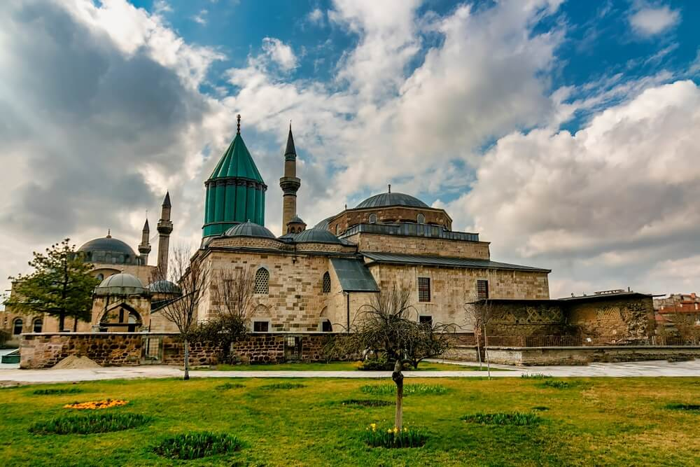

Konya Hakkında
Konya, Mevlana Celaleddin Rumi'nin şehri olarak bilinir ve Selçuklu dönemine ait tarihi yapılarıyla ünlüdür. İslam dünyasının önemli dini ve kültürel merkezlerinden biri olan Konya, Mevlana'nın öğretileriyle derin bir manevi mirasa sahiptir. Ayrıca şehir, muazzam Selçuklu mimarisi ve tarihi yerleriyle de dikkat çeker. Konya, tarihî zenginliklerinin yanı sıra geniş düzlükleri, yöresel yemekleri ve misafirperverliğiyle de öne çıkar.
Konya'da Ziyaret Edilmesi Gereken Başlıca Yerler:
- Mevlana Müzesi: Konya'nın en önemli turistik yerlerinden biri olan Mevlana Müzesi, Mevlana Celaleddin Rumi'nin türbesini ve onun öğretilerini keşfetmek isteyenler için harika bir yerdir. Müzede, Mevlana'nın yaşamına dair pek çok eser ve bilgi bulunmaktadır.
- Alaaddin Tepesi: Konya'nın en yüksek noktasında yer alan Alaaddin Tepesi, şehir manzarasını görebileceğiniz harika bir yerdir. Tepede, Selçuklu dönemine ait Alaaddin Camii de yer almaktadır ve bölgedeki en önemli tarihi yapılar arasındadır.
- Çatalhöyük: Çatalhöyük, Neolitik döneme ait bir höyüktür ve dünyanın en eski yerleşim alanlarından biri olarak kabul edilir. UNESCO Dünya Mirası Listesi'nde yer alan bu tarihi alan, tarih meraklıları için büyüleyici bir yerdir.
- Karatay Medresesi: Selçuklu döneminin önemli eğitim kurumlarından biri olan Karatay Medresesi, şimdi bir müze olarak kullanılmaktadır. Selçuklu taş işçiliğini ve seramik sanatını görmek isteyenler için harika bir duraktır.